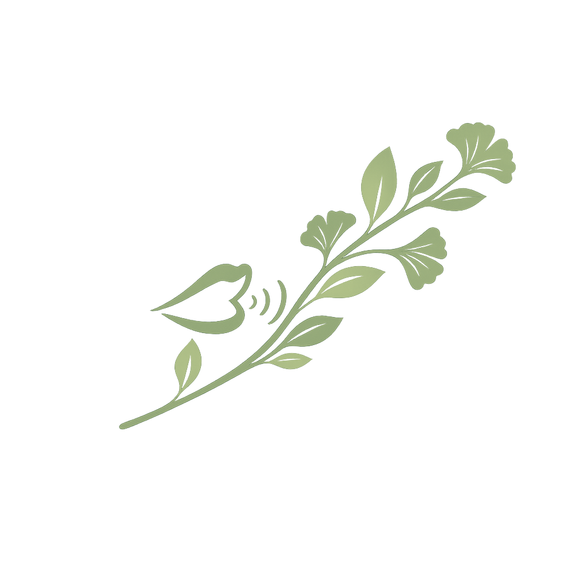
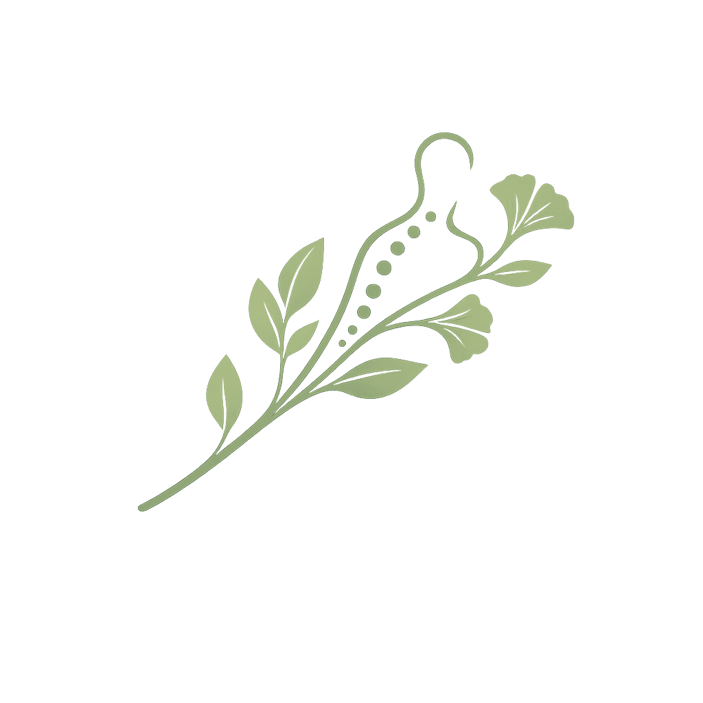
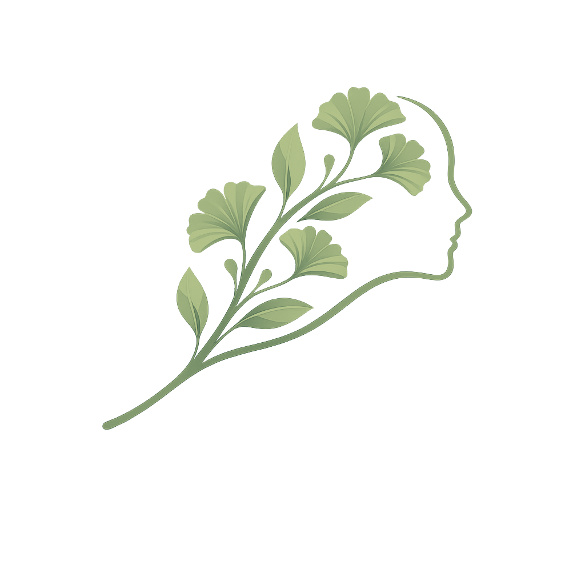
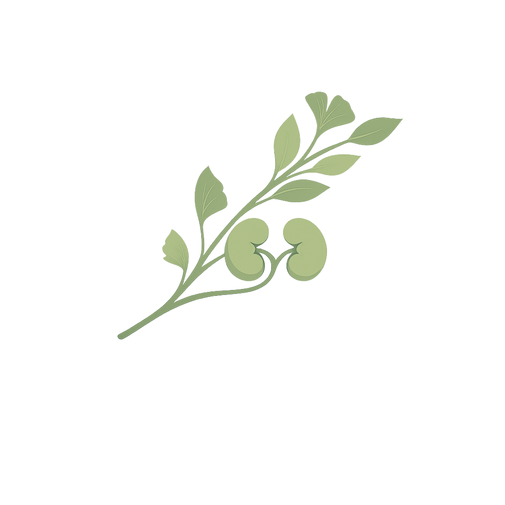

Nos Professionnels de Santé

Oriane Lanier
Orthophoniste
Bureau : 1
Journées de travail : Lundi-Mardi-Mercredi-Jeudi
Horaire: 9h-19h
Moyen de paiement: chèque/espèces ou virement
Garance Bretin
Orthophoniste
Bureau : 4
Journées de travail : Lundi-Mardi-Mercredi-Jeudi
Horaire : 9h-19h
Moyen de paiement : virement uniquement
Raphaëlle Romano
Orthophoniste
Bureau : 3
Journées de travail : Lundi-Mardi-Mercredi-Jeudi-Vendredi
Horaire: 9h-19h
Moyen de paiement: chèque/espèces ou carte bancaire

Sylvie Martins
Ostéopathe
Bureau : 2
Journées de travail : Lundi-Mercredi-Vendredi
Horaire: 8h-20h
Moyen de paiement: chèque ou espèces

Samantha Froumentin
Psychologue
Bureau : 4
Journées de travail : Lundi-Mardi-Mercredi-Jeudi-Vendredi
Horaire: 8h-20h
Moyen de paiement: chèque/espèces ou carte bancaire

Samia Ben Hamida
Nephrologue
Bureau : 2
Journée de travail : Mardi-Jeudi-Samedi
Horaire: 8h-20h
Moyen de paiement: chèque/espèces ou carte bancaire